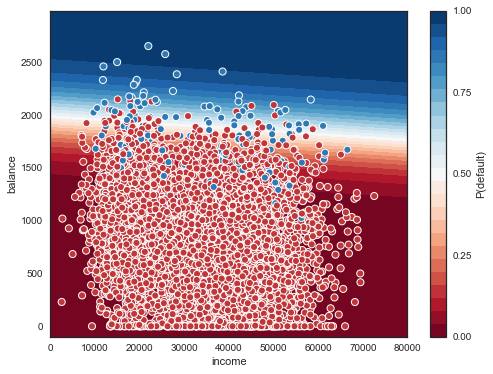
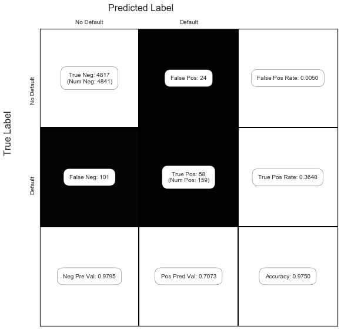

Exercise 5.5
import pandas as pd
import numpy as np
import patsy
import seaborn as sns
import matplotlib.pyplot as plt
import statsmodels.formula.api as smf
from sklearn.model_selection import train_test_split
from sklearn.linear_model import LogisticRegression
from sklearn.metrics import confusion_matrix
# statsmodels issue: https://github.com/statsmodels/statsmodels/issues/3931
from scipy import stats
stats.chisqprob = lambda chisq, df: stats.chi2.sf(chisq, df)
sns.set(style="white")
%matplotlib inlinenp.random.seed(1)
df = pd.read_csv("../data/Default.csv", index_col=0)
df['default_yes'] = (df['default'] == 'Yes').astype('int')
df.head()| default | student | balance | income | default_yes | |
|---|---|---|---|---|---|
| 1 | No | No | 729.526495 | 44361.625074 | 0 |
| 2 | No | Yes | 817.180407 | 12106.134700 | 0 |
| 3 | No | No | 1073.549164 | 31767.138947 | 0 |
| 4 | No | No | 529.250605 | 35704.493935 | 0 |
| 5 | No | No | 785.655883 | 38463.495879 | 0 |
df.info()<class 'pandas.core.frame.DataFrame'>
Int64Index: 10000 entries, 1 to 10000
Data columns (total 5 columns):
default 10000 non-null object
student 10000 non-null object
balance 10000 non-null float64
income 10000 non-null float64
default_yes 10000 non-null int64
dtypes: float64(2), int64(1), object(2)
memory usage: 468.8+ KB(a)
We are looking for LogisticRegression without regularization. In sklearn this is not implemented, but we can use l2 regularization and set C, the inverese strenght, to a very high number, effectively removing the regularization. We also compare the coefficients to the ones obtained from statsmodel LogisticRegression which has no regularization, and we verify that the coefficient estimates match.
Another parameter we have to consider is the tolerance. In this case, the default 1e-4 is not enough to reach convergence, so we increased it until it did.
Below we that the coefficients obtained with sklearn agree with those from statsmodels.
lr = LogisticRegression(C=10**6, tol=1e-6)
X = df[['income', 'balance']]
y = df['default_yes']
mod = lr.fit(X, y)
mod.coef_array([[ 2.07267113e-05, 5.64079143e-03]])f = 'default_yes ~ income + balance'
res = smf.logit(formula=f, data=df).fit()
res.summary()Optimization terminated successfully.
Current function value: 0.078948
Iterations 10| Logit Regression Results | |||
| Dep. Variable: | default_yes | No. Observations: | 10000 |
| Model: | Logit | Df Residuals: | 9997 |
| Method: | MLE | Df Model: | 2 |
| Date: | Fri, 05 Jan 2018 | Pseudo R-squ.: | 0.4594 |
| Time: | 16:05:52 | Log-Likelihood: | -789.48 |
| converged: | True | LL-Null: | -1460.3 |
| LLR p-value: | 4.541e-292 |
| coef | std err | z | P>|z| | [0.025 | 0.975] | |
| Intercept | -11.5405 | 0.435 | -26.544 | 0.000 | -12.393 | -10.688 |
| income | 2.081e-05 | 4.99e-06 | 4.174 | 0.000 | 1.1e-05 | 3.06e-05 |
| balance | 0.0056 | 0.000 | 24.835 | 0.000 | 0.005 | 0.006 |
(b)
i.
X_train, X_test, y_train, y_test = train_test_split(X, y, test_size=0.5)ii.
mod = lr.fit(X_train, y_train)
mod.coef_array([[ 1.62553551e-05, 5.83500517e-03]])iii.
Let’s try to plot this region and boundary. For more info on how to draw the boundary for logistic regression, here’s two answers by Michael Waskom, the creator of seaborn, and you can also see Jake VanderPlas’ book for an introduction to contour plots in general.
xx, yy = np.mgrid[0:80000:100, -100:3000:10]
grid = np.c_[xx.ravel(), yy.ravel()] # https://www.quora.com/Can-anybody-elaborate-the-use-of-c_-in-numpy
probs = mod.predict_proba(grid)[:, 1].reshape(xx.shape)f, ax = plt.subplots(figsize=(8,6))
contour = ax.contourf(xx, yy, probs, 25, cmap="RdBu", # 25 levels
vmin=0, vmax=1)
ax_c = f.colorbar(contour)
ax_c.set_label("P(default)")
ax_c.set_ticks([0,0.25,0.5,.75,1])
ax.scatter(X_test['income'], X_test['balance'], c=y_test, s=50,
cmap="RdBu", vmin=-0.2, vmax=1.2,
edgecolor="white", linewidth=1)
ax.set(xlabel="income", ylabel="balance");
iv.
y_pred = mod.predict(X_test)
1-(y_pred == y_test).mean()0.025000000000000022So our general test error is 2.5%.
But from the figure above, it seems that the error rates are very different depending on whether we are considering a positive or a negative. Let’s have a look at the confusion matrix as well (page 145 of ISLR). The function show_confusion_matrix() we use below is from this blog post by Matt Hancock (with a slight modification).
def show_confusion_matrix(C,class_labels=['0','1']):
"""
C: ndarray, shape (2,2) as given by scikit-learn confusion_matrix function
class_labels: list of strings, default simply labels 0 and 1.
Draws confusion matrix with associated metrics.
"""
import matplotlib.pyplot as plt
import numpy as np
assert C.shape == (2,2), "Confusion matrix should be from binary classification only."
# true negative, false positive, etc...
tn = C[0,0]; fp = C[0,1]; fn = C[1,0]; tp = C[1,1];
NP = fn+tp # Num positive examples
NN = tn+fp # Num negative examples
N = NP+NN
fig = plt.figure(figsize=(8,8))
ax = fig.add_subplot(111)
ax.imshow(C, interpolation='nearest', cmap=plt.cm.gray)
# Draw the grid boxes
ax.set_xlim(-0.5,2.5)
ax.set_ylim(2.5,-0.5)
ax.plot([-0.5,2.5],[0.5,0.5], '-k', lw=2)
ax.plot([-0.5,2.5],[1.5,1.5], '-k', lw=2)
ax.plot([0.5,0.5],[-0.5,2.5], '-k', lw=2)
ax.plot([1.5,1.5],[-0.5,2.5], '-k', lw=2)
# Set xlabels
ax.set_xlabel('Predicted Label', fontsize=16)
ax.set_xticks([0,1,2])
ax.set_xticklabels(class_labels + [''])
ax.xaxis.set_label_position('top')
ax.xaxis.tick_top()
# These coordinate might require some tinkering. Ditto for y, below.
ax.xaxis.set_label_coords(0.34,1.06)
# Set ylabels
ax.set_ylabel('True Label', fontsize=16, rotation=90)
ax.set_yticklabels(class_labels + [''],rotation=90)
ax.set_yticks([0,1,2])
ax.yaxis.set_label_coords(-0.09,0.65)
# Fill in initial metrics: tp, tn, etc...
ax.text(0,0,
'True Neg: %d\n(Num Neg: %d)'%(tn,NN),
va='center',
ha='center',
bbox=dict(fc='w',boxstyle='round,pad=1'))
ax.text(0,1,
'False Neg: %d'%fn,
va='center',
ha='center',
bbox=dict(fc='w',boxstyle='round,pad=1'))
ax.text(1,0,
'False Pos: %d'%fp,
va='center',
ha='center',
bbox=dict(fc='w',boxstyle='round,pad=1'))
ax.text(1,1,
'True Pos: %d\n(Num Pos: %d)'%(tp,NP),
va='center',
ha='center',
bbox=dict(fc='w',boxstyle='round,pad=1'))
# Fill in secondary metrics: accuracy, true pos rate, etc...
ax.text(2,0,
'False Pos Rate: %.4f'%(fp / (fp+tn+0.)),
va='center',
ha='center',
bbox=dict(fc='w',boxstyle='round,pad=1'))
ax.text(2,1,
'True Pos Rate: %.4f'%(tp / (tp+fn+0.)),
va='center',
ha='center',
bbox=dict(fc='w',boxstyle='round,pad=1'))
ax.text(2,2,
'Accuracy: %.4f'%((tp+tn+0.)/N),
va='center',
ha='center',
bbox=dict(fc='w',boxstyle='round,pad=1'))
ax.text(0,2,
'Neg Pre Val: %.4f'%(1-fn/(fn+tn+0.)),
va='center',
ha='center',
bbox=dict(fc='w',boxstyle='round,pad=1'))
ax.text(1,2,
'Pos Pred Val: %.4f'%(tp/(tp+fp+0.)),
va='center',
ha='center',
bbox=dict(fc='w',boxstyle='round,pad=1'))
plt.tight_layout()
plt.show()C = confusion_matrix(y_test, y_pred)
show_confusion_matrix(C, ['No Default', 'Default'])
Recall the definitions used in the confusion matrix above: * P - condition positive (the number of real positive cases in the data) * N - condition negative (the number of real negative cases in the data) * TP - true positive (hit) * TN - true negative (correct rejection) * FP - false positive (false alarm, Type I error) * FN - false negative (miss, Type II error) * True positive rate, TPR = \(\frac{TP}{P} = \frac{TP}{TP + FN}\) * False positive rate, FPR = \(\frac{FP}{N} = \frac{FP}{FP + TN}\) * Positive predictive value, PPV = \(\frac{TP}{TP + FP}\) * Negative predictive value, NPV = \(\frac{TN}{TN + FN}\) * Accuracy, ACC = \(\frac{TP + TN}{P+N} = \frac{TP+TN}{TP+TN+FP+FN}\)
So, our true positive rate (or sensitivity, recall or hit rate) is 0.3648, our false positive rate (or fall-out) is 0.0050, our positive predictive value (or precision) is 0.7073, our negative predictive value is 0.9795, and our accuracy is 0.9750.
(c)
Let’s keep a vector of the confusion matrices, and compute the different errors for each validation set.
C = [C]for i in range(1,4):
X_train, X_test, y_train, y_test = train_test_split(X, y, test_size=0.5)
mod = lr.fit(X_train, y_train)
y_pred = mod.predict(X_test)
C.append(confusion_matrix(y_test, y_pred))tpr, fpr, ppv, npv, acc = ([] for i in range(5))
for c in C:
tn = c[0,0]
fp = c[0,1]
fn = c[1,0]
tp = c[1,1]
tpr.append((tp / (tp+fn+0.)))
fpr.append((fp / (fp+tn+0.)))
ppv.append((tp/(tp+fp+0.)))
npv.append((1-fn/(fn+tn+0.)))
acc.append(((tp+tn+0.)/(tn+fp+fn+tp)))def line(l):
return " ".join( '{:06.4f}'.format(a) for a in l) + ', Average: ' +'{:06.4f}'.format(sum(l)/ len(l))
print('TPR: ')
print(line(tpr))
print('FPR: ')
print(line(fpr))
print('PPV: ')
print(line(ppv))
print('NPV: ')
print(line(npv))
print('ACC: ')
print(line(acc))TPR:
0.3648 0.3452 0.3030 0.3293, Average: 0.3356
FPR:
0.0050 0.0029 0.0041 0.0029, Average: 0.0037
PPV:
0.7073 0.8056 0.7143 0.7941, Average: 0.7553
NPV:
0.9795 0.9777 0.9767 0.9777, Average: 0.9779
ACC:
0.9750 0.9752 0.9730 0.9752, Average: 0.9746The values above indicate that some quantities vary more than others when we change the validation set. In particular, the positive predicted value (PPV) varies from 0.71 to 0.81. The PPV is the ratio of the true positives over the sum of the true positives and false positives. In other words, it’s a ratio involving the quantities above the boundary in the region above. And since both these quantities vary significantly in this case, the variance of the PPV is expected. The accuracy on the other handle is much more robust across different validation sets, for the opposite reason. The quantities involved in its computation do not vary as much. The denominator is a constant, and the numerator, TP + TN, is somewhat stable, since TP and TN would on average vary in opposite directions.
(d)
df['student_yes'] = (df['student'] == 'Yes').astype('int')df.head()| default | student | balance | income | default_yes | student_yes | |
|---|---|---|---|---|---|---|
| 1 | No | No | 729.526495 | 44361.625074 | 0 | 0 |
| 2 | No | Yes | 817.180407 | 12106.134700 | 0 | 1 |
| 3 | No | No | 1073.549164 | 31767.138947 | 0 | 0 |
| 4 | No | No | 529.250605 | 35704.493935 | 0 | 0 |
| 5 | No | No | 785.655883 | 38463.495879 | 0 | 0 |
X = df[['income','balance','student_yes']]
y = df['default_yes']
f = 'default_yes ~ income + balance + student_yes'
X_train, X_test, y_train, y_test = train_test_split(X, y)
train = X_train.join(y_train)
res = smf.logit(formula=f, data=train).fit()
res.summary()Optimization terminated successfully.
Current function value: 0.076250
Iterations 10| Logit Regression Results | |||
| Dep. Variable: | default_yes | No. Observations: | 7500 |
| Model: | Logit | Df Residuals: | 7496 |
| Method: | MLE | Df Model: | 3 |
| Date: | Fri, 05 Jan 2018 | Pseudo R-squ.: | 0.4799 |
| Time: | 16:07:39 | Log-Likelihood: | -571.88 |
| converged: | True | LL-Null: | -1099.5 |
| LLR p-value: | 1.954e-228 |
| coef | std err | z | P>|z| | [0.025 | 0.975] | |
| Intercept | -10.9255 | 0.579 | -18.873 | 0.000 | -12.060 | -9.791 |
| income | -6.764e-06 | 9.4e-06 | -0.720 | 0.472 | -2.52e-05 | 1.17e-05 |
| balance | 0.0061 | 0.000 | 21.174 | 0.000 | 0.006 | 0.007 |
| student_yes | -1.0870 | 0.274 | -3.961 | 0.000 | -1.625 | -0.549 |
y_pred = (res.predict(X_test) > .5) * 1C = confusion_matrix(y_test, y_pred)
show_confusion_matrix(C, ['No Default', 'Default'])So compared to the values above without the student dummy variable, it seems that adding the student variable does not help in any of the metrics since they are worse or very similar (although we should consider the variance, in a more careful analysis).